Трите причини — вдясно от заглавието
Четири варианта вдясно от заглавието, всеки с повече текст и с трите цвята. Снимките са от истинската страница; линковете я отварят на живо с варианта вътре. Нищо от това още не е в сайта.
1Списък с по-едри заглавия и по едно изречениеA list with larger titles and one sentence each
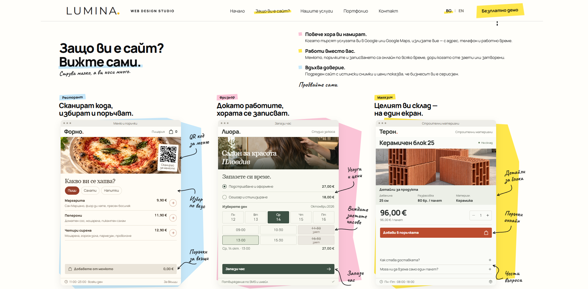
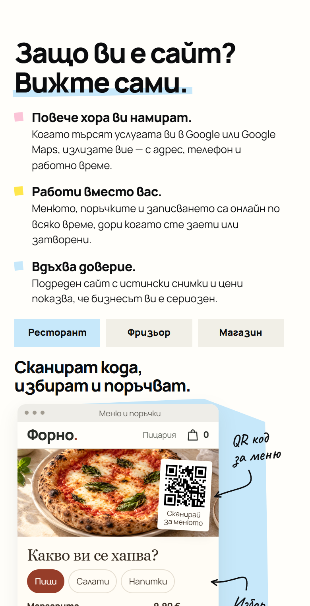
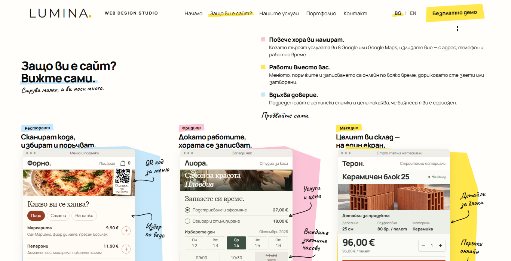
2Хартиена бележка „Три причини“A paper note titled "Three reasons"
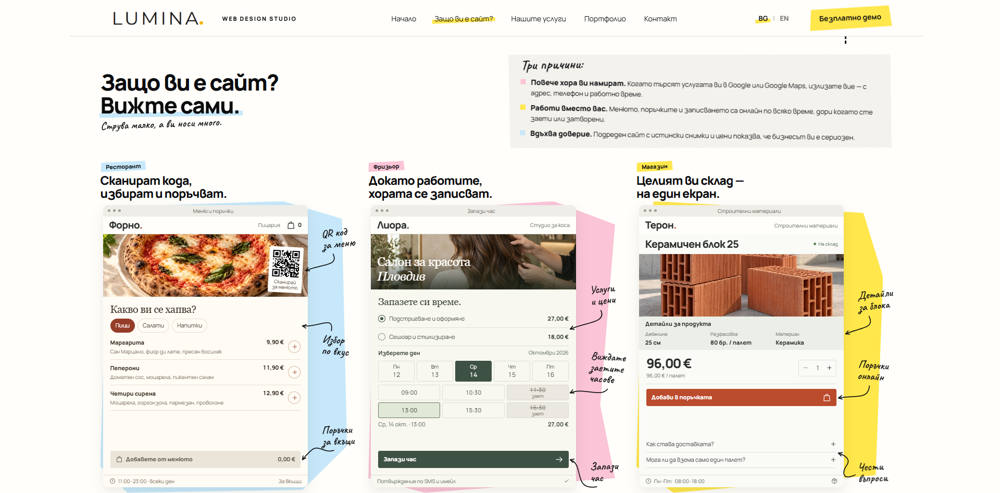
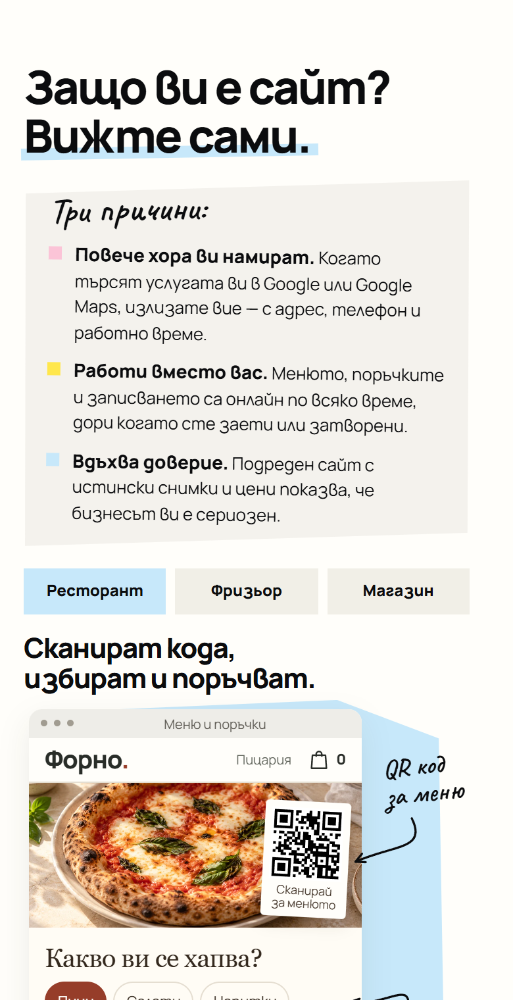
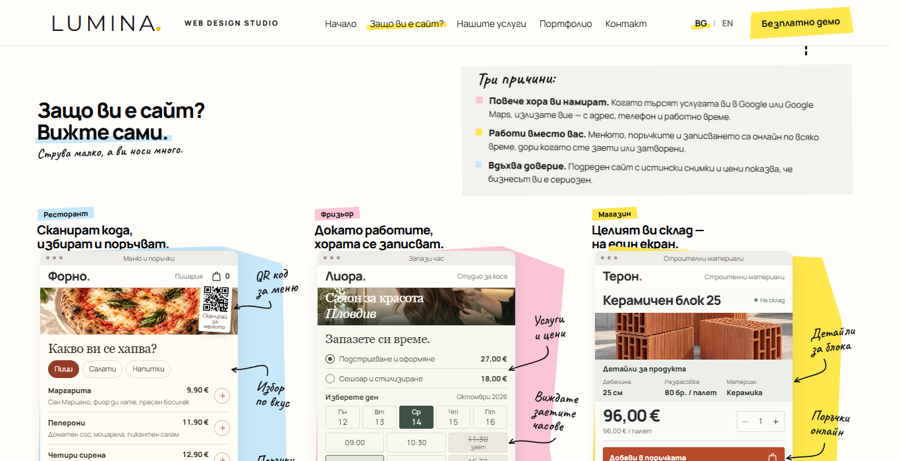
3Кратък абзац и три цветни етикетаA short paragraph and three colour tags
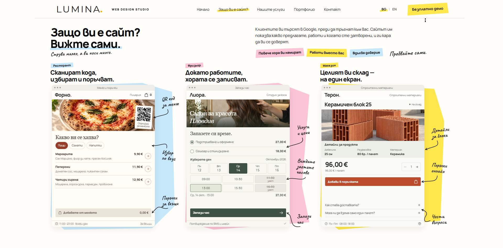
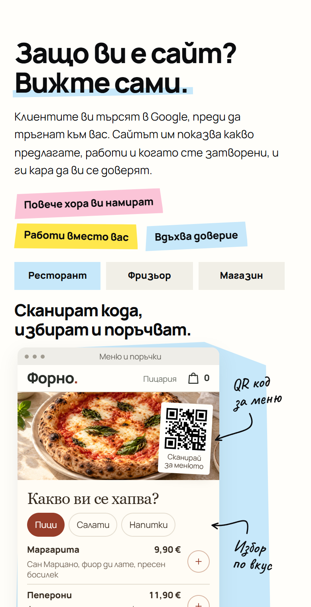
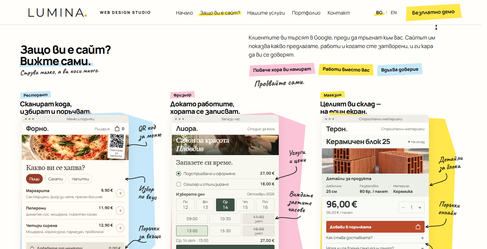
4Три реда с цветен маркер върху заглавиятаThree lines with a colour marker on the titles
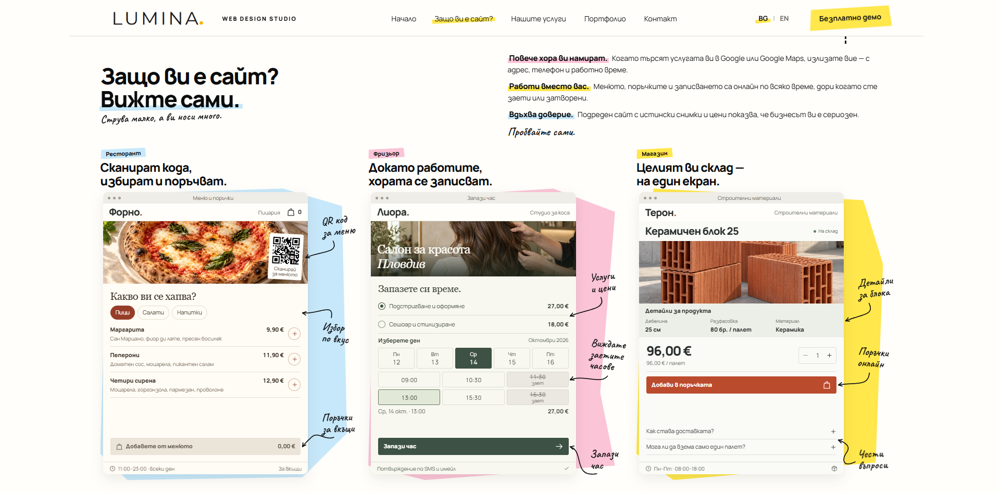
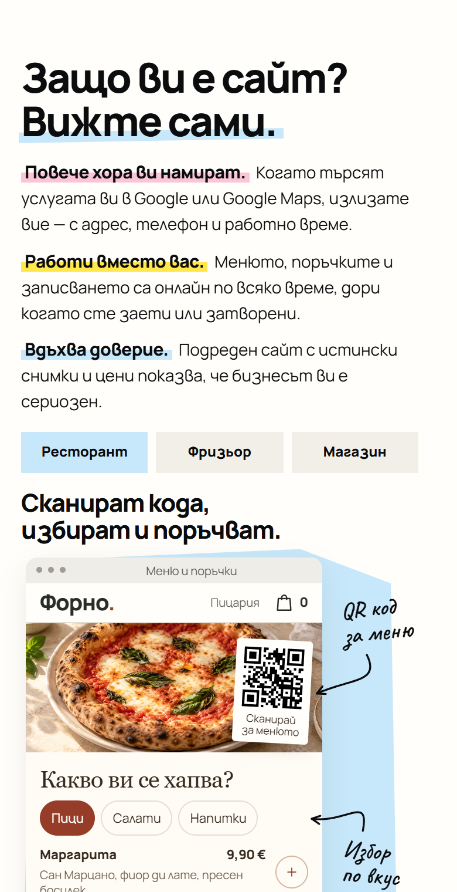
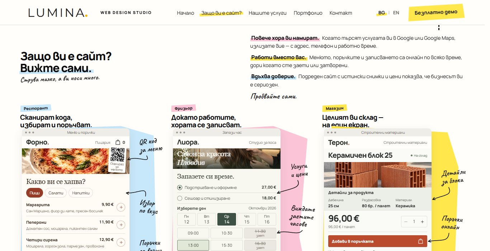